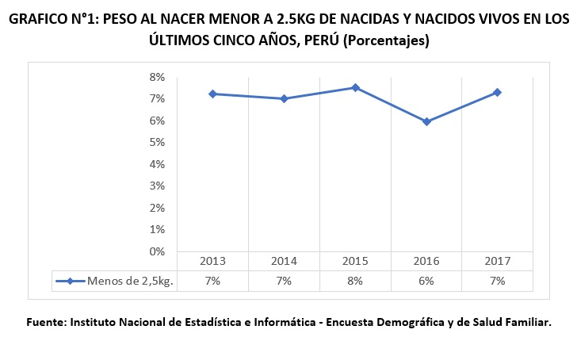
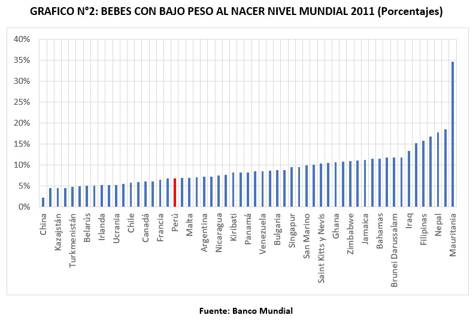
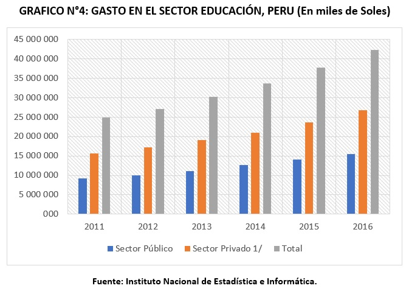
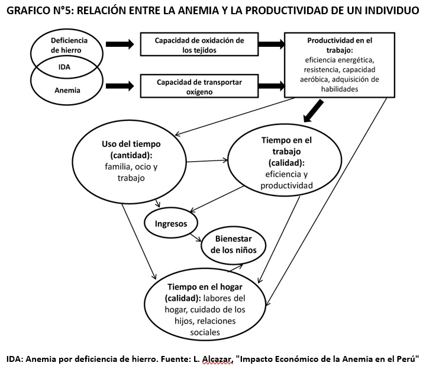

Medición del efecto y comparar con estándares
a) Riesgo durante el Embarazo
Existen dos riesgos importantes durante el embarazo cuando la madre presenta anemia. En primer lugar, está el bajo peso al nacer y en segundo el riesgo de parto prematuro. Ambos factores están estrechamente relacionados, ya que los niños nacidos prematuramente suelen tener bajo peso. Y a diferencia de los niños a término y con peso apropiado al nacer, estos agotan más rápidamente sus reservas de hierro, por lo que requieren recibir un suplemento muy tempranamente [4].
En general, un estudio en el Hospital Nacional Daniel Alcides Carrión se encontró una asociación entre anemia y complicaciones materno – fetales en las gestantes, existiendo 4,05 veces más riesgo de presentar alguna complicación materno – fetal si la gestante presentara anemia [5]. Aunque el nacimiento prematuro es una causa importante de anemia en los niños solo representa el 6,5% de los nacimientos en el Perú, y puede deberse a múltiples causas [6]. Por lo que en este punto nos enfocaremos en los nacimientos con bajo peso al nacer, que es una causa más relevante. Investigaciones muestran que la anemia incide negativamente en el sistema inmune y dificulta el transporte de oxígeno a los tejidos, con graves consecuencias para el feto, aumentando el riesgo de prematuridad, bajo peso al nacer y morbimortalidad materno-infantil. El estudio revisado coincide en que la anemia durante el embarazo ocasiona el nacimiento de niños con bajo peso, lo que es un riesgo para que el niño también desarrolle anemia en los primeros meses de vida [7] y [8].
En el Grafico N°1 podemos ver la prevalencia, en porcentaje, de los bebes nacidos con bajo peso (menor a 2.5Kg) en el Perú en los últimos 5 años. El porcentaje de nacimientos de bajo peso parece haberse mantenido estable en 7%, lo cual podemos corroborar al analizar la información encontrada en la Grafica N°2 para el año 2011 cuya fuente es el Banco Mundial. Nuestra situación como país parece ser media baja, comparada con la información de otros países a nivel mundial, con un valor mínimo encontrado en China, con 2.33%; y un valor máximo encontrado en Mauritania, con 34.7%.
b) Deterioro del desarrollo intelectual/Cognitivo
Se tiene un conocimiento respecto a los efectos negativos de la deficiencia de hierro en el desarrollo cerebral, debido a que dicho proceso depende de enzimas y proteínas que contienen hierro. Este mineral está contenido en enzimas que participan en la síntesis de lípidos, los cuales son necesarios para las membranas celulares y para la síntesis de mielina en el cerebro [9].
La mielina es una capa aislante que se forma alrededor de los nervios, su principal función es trasmitir los impulsos eléctricos de manera rápida alrededor de las neuronas [10].
El hierro es, además, importante durante el proceso metabólico de neurotransmisores en el hipocampo, región cerebral en la cual se dan los procesos de aprendizaje y memoria [9].
Los neurotransmisores son sustancias químicas que trasmiten señales desde una neurona a otra [11].

El Grafico N°3 es una adaptación del trabajo conjunto de Richard Lynn, psicólogo británico, y Tatu Vanhanen, politólogo finlandés, los cuales analizaron el IQ de varios países, es decir, la manera de calificar las capacidades intelectuales. El primer puesto a nivel mundial lo ocupa Singapur, con 108 puntos y el último Guinea Ecuatorial con 59. En Sudamérica, la tabla la lidera Uruguay con un 96, y la culmina Jamaica con un 71. A Perú le corresponde una media de 85 puntos. Este cuadro data del 2014 [12].
En el Grafico N°4 se demuestra la distribución en el sector educación, al ser los lugares más afectados por la anemia, zonas donde mayormente se centra un sector público, usaremos este. En el año 2014 se utilizaron 12 674 000 (miles de soles), en el año 2015 se utilizaron 14 119 000 (miles de soles) y en el año 2016 se utilizaron 15 539 000 (miles de soles). Utilizamos esto como cuantificador del impacto ya que es dinero que no dará frutos debido al bajo rendimiento de las personas que padecen de anemia [13].
c) Deterioro del desarrollo Motor/Productividad
El desarrollo motor es un proceso secuencial y continuo, donde las personas adquieren habilidades motoras organizadas y completas. Sin embargo, hay factores tanto biológicos como ambientales que ponen en peligro el normal desarrollo de estas habilidades [14]. Entre uno de estos factores, uno principal es el de anemia por deficiencia de hierro, en una revisión sistemática del 2001, personas que tienen un desarrollo motor en su niñez fueron anémicos. En este mal desarrollo hay funciones importantes que se ven afectadas como la de la lectura y escritura, que involucran tanto áreas cognitivas como motoras [15], que estas a largo plazo afectan en la capacidad para poder realizar labores de productividad del trabajo físico [16]. En el Gráfico N°5 se muestra la relación entre la anemia y la productividad del individuo.
Este deterioro en la productividad del trabajo físico no solo tiene un efecto negativo en los que la padecen si no también afecta a sus familias y al Estado peruano. Para poder tener un mejor entendimiento de cuán grande es este problema se puede medir con respecto al PBI. lo cual analizaremos más adelante.
d) Deterioro del desarrollo Conductual/Emocional
La anemia afecta a casi la mitad de los niños menores de cinco años, y a una tercera parte de las gestantes [17]. En países de bajos y medianos ingresos, como el Perú, se estima que la causa principal de la anemia es la deficiencia de hierro. Por la falta de hierro en el cuerpo, la anemia acarrea bastantes efectos; uno de estos es en el aspecto conductual.
La conducta socioemocional comprende el establecimiento de relaciones con otras personas usando sus emociones, así como la regulación de sí mismo y su interés hacia el exterior. En niños que tuvieron anemia en el primer año de vida (a los 6, 12 y 18 meses), y que luego fue corregida mediante suplementación, se encontró que, a los 10 años de seguimiento, tuvieron tiempos de reacción más lentos y menor capacidad para controlar respuestas impulsivas, lo que se le denomina como pobre control inhibitorio. Esta dificultad es uno de los déficits conductuales que se relaciona con trastornos como déficit de atención e hiperactividad, entre otros. Estos comportamientos no deseados y problemas de conducta tienen un impacto no solo dentro de cada hogar, sino también en las escuelas, y posiblemente, con el tiempo, generen algún tipo de problema social mayor.
Por otro lado, un estudio en China diferenció efectos según sexo en la manifestación conductual a los seis años, los niños tenían más problemas de atención, mientras que las niñas presentaron mayor agresión.
Así vemos que los efectos de la anemia en niños afectan claramente en su desarrollo conductual, por ende, en sus habilidades sociales.